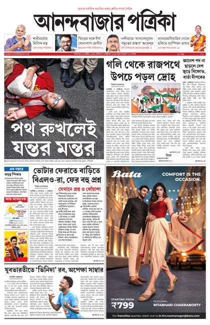
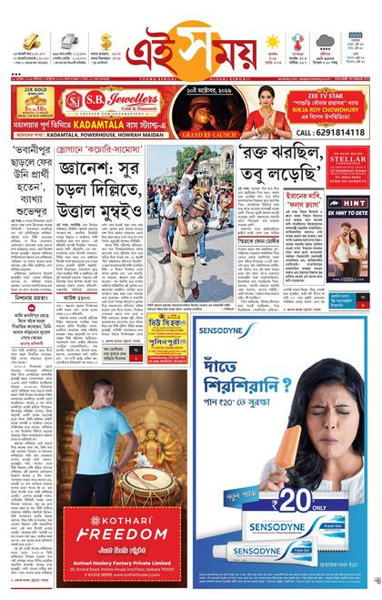
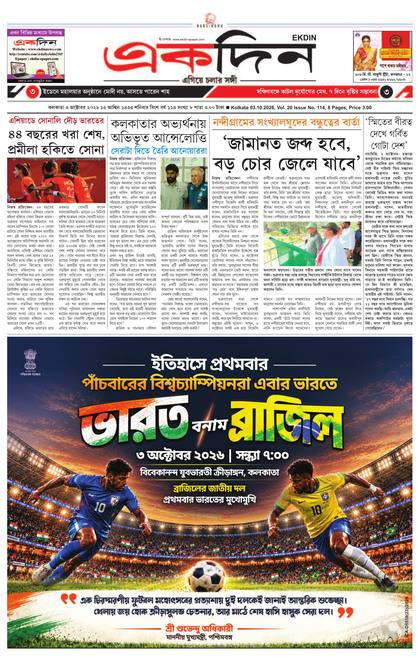
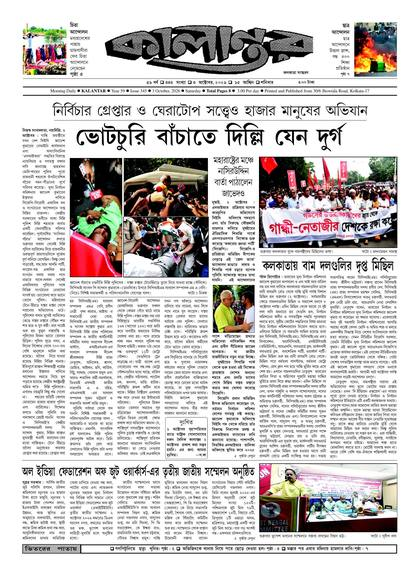
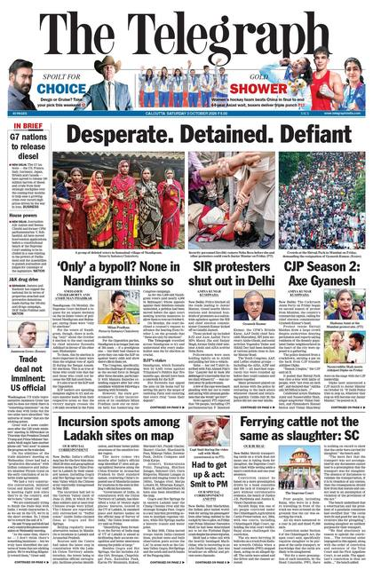
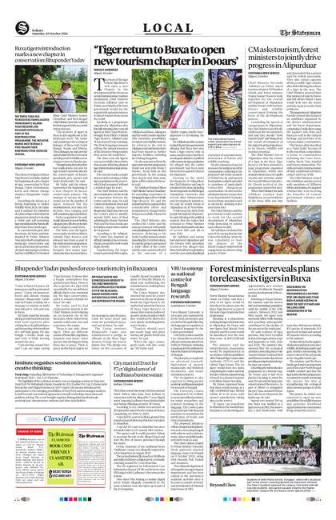
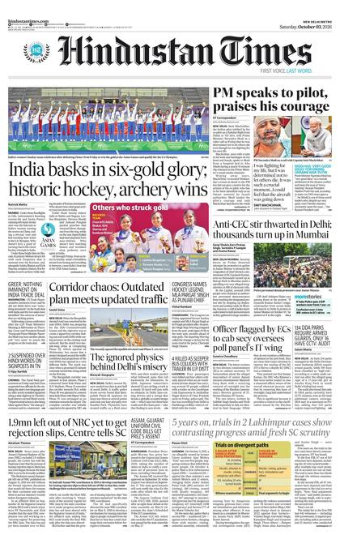

পাতায় ক্লিক করলে সেই কাগজের ই-পেপার খুলবে। শিরোনাম পড়তে নীচের ‘বড় করে দেখুন’-এ ক্লিক করুন। গ্রাহক-কাগজের (টাইমস অব ইন্ডিয়া, ইন্ডিয়ান এক্সপ্রেস) পাতা এখানে নেই। গত ৪৫ দিনের পাতা রাখা হয়।Click a page to open that paper's e-paper; to read the headlines here, use 'Enlarge' below it. Subscription-only papers (Times of India, Indian Express) are not included. The last 45 days are kept.






